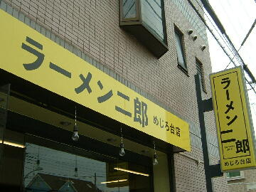
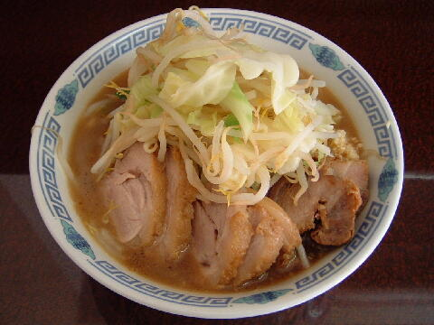
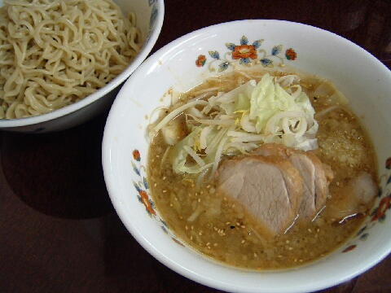
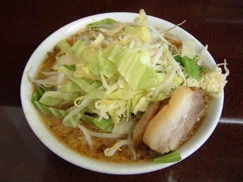
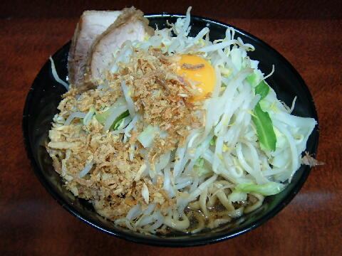

八王子市 椚田町 513-9
日・木・祝
11：30〜14：30 18：00〜21：00

小ラーメン 700円、ぶた小ラーメン 800円
大ラーメン 800円、ぶた大ラーメン 900円
ミニらーめん 600円
つけ麺 ＋150円、つけ味ラーメン ＋150円、汁なしラーメン ＋100円
生たまご 50円
店員は、店主と助手２名。
コショウ、トウガラシ、醤油ダレ。
レンゲ有。ティッシュ無。名刺無。
BGMは、ラジオ。
トッピングは、二郎基準だがアブラは味付きアブラ（黒アブラ）。言えば通常のアブラ（白アブラ）にもしてくれる。
メルマガは「a0001676167@mobile.mag2.com」で用意されている。
「ラーメン二郎 めじろ台」でヤフー検索
「ラーメン二郎 めじろ台」でヤフーリアルタイム検索
「ラーメン二郎 めじろ台」でグーグル検索

ぶた小ラーメン ニンニク
麺は、小麦の風味が旨い、汁をよく吸ったモチモチの自家製の極太麺。
ぶたは、しっとりしていてちょうど良い味付けの好みのもの。
スープは、微乳タイプ。
ヤサイは、モヤシ7：キャベツ3の割合。質の良い野菜が美味しい。
ニンニクは、細かく刻んだタイプ。ハッキリとした旨味がある。

小ラーメン＋つけ麺 ニンニク
トッピングはラーメンと同じ。
タレの皿には、ヤサイ（少ないのはブレ）とぶた3枚にゴマが振りかけれれる。ほのかなユズの風味。
麺の皿には、麺のみ。下にスノコが敷いてある。

小ラーメン＋つけ味ラーメン ニンニク
ラーメンのスープをつけ麺のスープにしたもの。
ほのかにユズの風味があり、ゴマが加えられていた。
丼がラーメンのものとは違っており、量もラーメンと比べて５割程多いそうだ。

小ラーメン＋汁なしラーメン ニンニク
トッピングはラーメンと同じ。
二郎関内直伝なので、卵黄、フライドオニオン、黒コショウと構成は同じだが、
ゴワゴワした太麺、関内とは違う豚、キャベツ多めの野菜など、め二郎の方がシッカリした印象の仕上がりになっている。
ＰＣ店